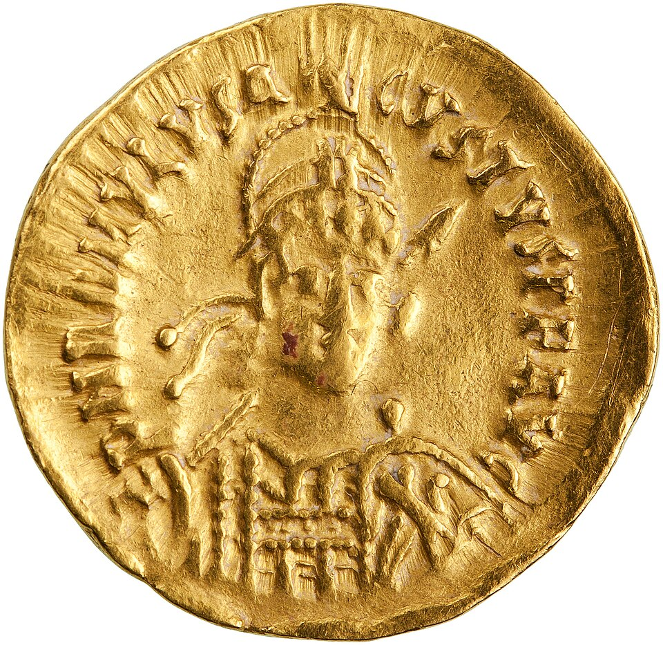

Odoacro depone al joven Rómulo y envía las insignias imperiales a Constantinopla
El jefe de las tropas bárbaras al servicio del Imperio entró en Rávena tras vencer en Pavía al patricio Orestes. Al niño emperador, a quien las lenguas llaman Augústulo, le perdonó la vida y lo confinó con una pensión en una villa de Campania. Nadie ha vestido la púrpura en su lugar.

Rávena, entre sus lagunas y sus murallas, amaneció hoy sin emperador. Odoacro, caudillo de los hérulos, esciros y otras gentes bárbaras que sirven bajo las águilas, entró en la ciudad y depuso a Rómulo, el muchacho que ocupaba el trono de Occidente desde hace apenas diez meses. No hubo matanza en palacio ni cuerpos arrastrados por las calles, como tantas veces vio este siglo: el vencedor se apiadó de la corta edad del vencido. El joven, a quien la soldadesca llama con burla Augústulo, el emperadorcito, entregó la púrpura sin que nadie muriera por defenderla.
El desenlace venía escrito desde Pavía. Allí Odoacro venció al patricio Orestes, padre del emperador y verdadero dueño del poder, que había negado a los soldados bárbaros las tierras itálicas que reclamaban como paga. Orestes, capturado, fue ejecutado cerca de Placentia hace pocos días; su hermano Paulo cayó hoy ante las puertas de Rávena. Con ellos se extingue la casa que hace un año derribó al emperador Julio Nepote, hoy refugiado en Dalmacia, donde todavía se dice soberano. Los soldados, cumplida la venganza, alzaron a Odoacro sobre los escudos y lo aclamaron rey de sus gentes.
Nadie en Italia puede fingir asombro. Hace un siglo que la púrpura de Occidente se pone y se quita como un manto de teatro: emperadores niños, emperadores soldados, emperadores de unos meses, hechura de generales que gobiernan detrás del trono. Rómulo mismo no fue reconocido por Constantinopla, que sigue tratando a Nepote como legítimo. Las provincias se han ido soltando una a una: Britania hace décadas que no ve un funcionario imperial, África es de los vándalos, Hispania y las Galias obedecen a reyes godos. Lo que Odoacro tomó hoy no es un imperio: es Italia, y no entera.
Del muchacho depuesto se sabe que partirá hacia Campania, a la antigua villa de Lúculo, junto al golfo de Nápoles, con una pensión de seis mil sueldos de oro al año y la compañía de los suyos. Cuentan que Odoacro lo miró con más lástima que rencor, y que el niño lloró menos por el trono que por el padre. Suerte más dulce que la de casi todos sus antecesores, muertos por el hierro. En los mercados de Rávena, mientras tanto, se compró y se vendió como cualquier otro día: el pueblo hace tiempo que no espera nada de los emperadores.
Lo más extraño no es la caída, sino lo que Odoacro ha decidido hacer con los despojos. No se ha vestido de púrpura ni ha buscado un títere que la vista: hace saber que enviará las insignias imperiales, la diadema y el manto, al emperador Zenón, en Constantinopla, con el mensaje de que un solo emperador basta para el mundo. Él gobernará Italia como rey, dice, en nombre del imperio lejano. Será, suponemos, un arreglo pasajero, como todos los de este siglo fatigado. Queda en el aire, sin embargo, una pregunta que nadie se atreve a responder: ¿volverá alguien a vestir la púrpura en Occidente?